Source-pixel PNG candidates — edge and label review
Light/dark backgrounds expose fringe and unwanted matte. These are not approved animation layers.
head-front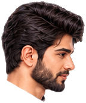
head-3q-right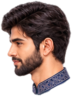
head-3q-left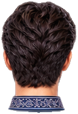
head-back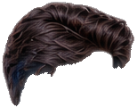
hair-front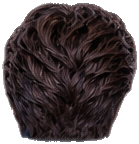
hair-back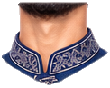
neck-collar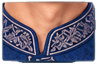
collar-detail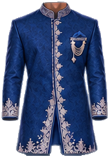
torso-front-with-sleeves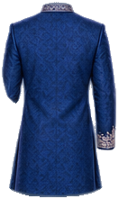
torso-backcoat-front-left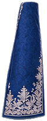
coat-front-right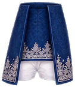
pelvis-with-coat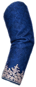
sleeve-left-upper-reference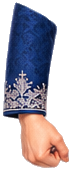
sleeve-left-forearm-with-hand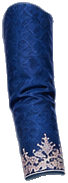
sleeve-right-upper-reference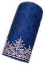
sleeve-right-forearmhands-left-hold-pairhand-right-relaxedhand-right-hold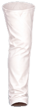
thigh-leftshin-left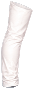
thigh-right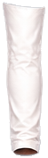
shin-right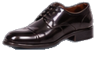
shoe-left-side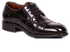
shoe-right-side hand-left-relaxed-v1
hand-left-relaxed-v1